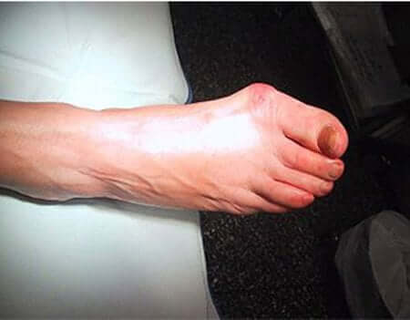
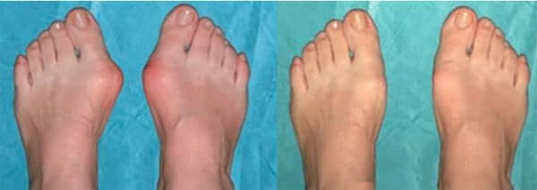
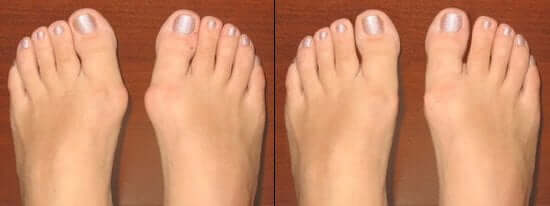
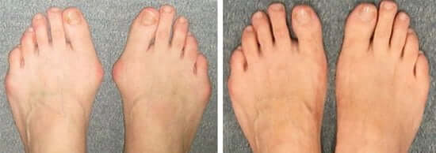

Wahrscheinlich gibt es in unserem Land Millionen von älteren und nicht ganz gesunden Frauen wie ich. Jede erste hat Bluthochdruck, oder Diabetes, oder noch ein Wehwehchen. Und sogar ein paar. Die Ärzte diagnostizierten bei mir Valgus-Deformation der Füße, oder volkstümlich «Knochen» oder «Beule» auf der großen Zehe. Meine Großmutter und meine Mutter litten darunter. Meine Mutter wurde sogar operiert. Also habe ich es erblich. Und in meiner Jugend mochte ich sehr, enge Pumps auf hohen Pfennigabsätzen tragen.

In meinen 54 Jahren habe ich eine Hallux Valgus-Deformation der Füße, die vorher nur durch Operation
beseitigt wurde.
Die Krankheit hat sich ziemlich schnell entwickelt. Anfangs hat mir diese Beule nur Unbehagen am Bein bereitet. Dann tat sie sehr weh. Aufgrund der Tatsache, dass die Zehe begann, sich in den Fuß zu biegen, fing sie an, den zweiten zu drücken, er begann sich zu erheben und an der Schuhspitze zu stützen. Und am unteren Fuß bildete sich ein schmerzhaftes Hühnerauge. Und in meinen 54 Jahren konnte ich überhaupt nicht mehr in meinen Schuhen laufen! Meine Beine waren in ihnen wie in einem glühenden Schraubstock.
Ich bin zum Orthopädie Zentrum gegangen. Dort schaute der Arzt auf meine Füße und sagte, dass hier nichts getan werden kann und es notwendig ist, operiert zu werden, wenn ich gehen will. Und dann haben bei mir bereits eine chronische Bursitis (Entzündung) der Zehe und Arthrose begonnen.
Ich kam vom Arzt und weinte. Schließlich wurde meine Mutter im selben Krankenhaus behandelt. Vielmals besuchte sie Physiotherapie in diesem Zentrum. Wie viel Geld sie da gebracht hat. Alles sinnlos. Und dann wurde die Operation durchgeführt. Ihr Befinden wurde natürlich besser. Aber die Schmerzen sind immer noch geblieben. Und sie konnte trotzdem nicht viel laufen.
Aber es gibt nichts zu tun. Wir begannen, Geld für die Operation zu sammeln. Ohne sie hätte ich überhaupt nicht laufen können. Aber eines morgens kommt mein Sohn in mein Zimmer und beginnt aus seinem Telefon zu lesen. Es stellt sich heraus, dass er im Internet einen Artikel gefunden hat, in dem es über Orthofix geschrieben wird. Dort wird der Beutel mit Wasser verdünnt, auf die Gelenke geschmiert, er richtet die gequetschten und gekrümmten Weichteile des Hauptgelenks der Zehe aus und korrigiert auch die sich entwickelnde Krümmung. Und die Leute schreiben, dass in einem Monat oder einem anderen, konnten sie ihre Zehe strecken, diese verdammte Beule entfernen und, ohne Operation zu tun! Stellen Sie sich vor!!
Der Sohn hat sofort im Internet dieses Mittel bestellt. Nach einer Woche konnte ich es schon benutzen.
Sobald ich das Mittel verwendet habe, ein paar Tage später, fühlte ich, dass die Schmerzen der Füße weniger geworden waren.
Nach einer Woche sind die Schmerzen fast verschwunden. Nach ein wenig mehr konnte ich meine Lieblingsschuhe wieder anziehen. Am Anfang war es ein wenig unangenehm, aber in zwei Wochen konnte ich praktisch meine Zehe strecken und die Beule entfernen! Und in einen Monat habe ich die Valgus-Deformation vollständig losgeworden!

Ergebnis einer monatlichen Behandlung mit Orthofix
Nach der Genesung ist ein halbes Jahr vergangen. Ich kann wieder frei laufen, Landwirtschaft betreiben, auf die Jagd gehen und mich mit meinen Enkeln beschäftigen.
Nach der Genesung habe ich ein erfülltes Leben geheilt
Mit Enkelkinder Zeit verbringen
Doch, was für ein Glück ist es, gesund zu sein! Danke an die Entwickler von Orthofix
P.S. Der Sohn bestellte Orthofix auf der offiziellen Website des Herstellers .
Füllen Sie das Formular aus, um den Aktionspreis zu erhalten! die Anzahl der
Werbeverpackungen ist begrenzt!
Buchen Sie Ihr Orthofix
im Rahmen der Aktion
Beeilen Sie sich! Noch54Packungen verfügbar sind!
Im Rahmen der Aktion:
149EURO
100% Garantie der Beseitigung von Hallux-Valgus
Sonstvolle Rückerstattung
Umein Orthofix zu einem ermäßigten Preis zu buchen, füllen Sie bitte das Formularaus.
Tolle Sache! Früher trug ich nur formlose breite Clogs und noch besser – weiche Hausschuhe. Ich benutzeseit zwei Monaten, und jetzt gehe ich mit meiner Tochter zusammen und wähle beliebige Schuhe in den Geschäften.
Ich bin eine Ballerina, nicht so berühmt, aber in meiner Stadt wissen die Leute von mir. Die Tatsache ist, dass meine glänzende Schönheit auf der Bühne eine höllische Arbeit für mich ist. In der letzten Zeit konnte ich Spitzentanz überhaupt nicht spielen wegen Deformation des Fußes. Wenn für jemanden die Beulen nur ästhetisches Unbehagen bringen, für mich bedeuteten sie das Ende der Karriere. Orthofix habe ich zufällig bei meiner Kollegin gefunden. Ich habe gefragt, was es ist, und sie hat alles über ihn erzählt. Ich beschloss, auch zu versuchen. Ehrlich gesagt, solche Ergebnisse habe ich nicht erwartet. Ich dachte dass alles sehr bald beendet wird, das heisst auf Wiedersehen, Ballett, auf Wiedersehen, Tanzen.
Und ich habe die Operation vor 10 Jahren. Anfangs war ich in Ordnung, und dann fing alles wieder an. Die Gelenke schmerzen, der Knochen wächst, ich kann nicht gehen. Ich habe versucht, im Internet etwas Nützliches zu finden, aber es gibt so viel Quatsch da. Das Ei wie Heilsmittel wurde empfohlen, dann Salz. Unter dem Messer wollte ich mich nicht wieder legen. Dann fand ich einen ähnlichen Artikel aus, versuchte, und es hat mir geholfen.
Und diejenigen, die sagen, dass es keinen Effekt gibt, haben in jedem Fall eine Fälschung gekauft!
Ich kenne das Medikament aus erster Hand. Ich habe selber mit seiner Hilfe mein Problem gelöst. Ich möchte hinzufügen, dass Paulina Hoffmann sehr glücklich ist, dass ihr Sohn auf dieses Mittel gestoßen ist.